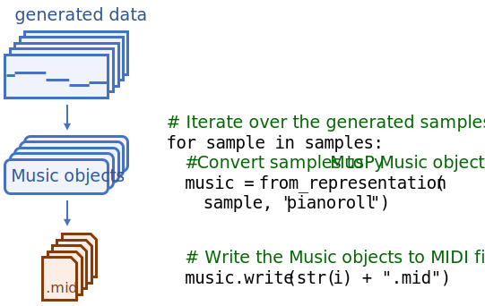

Getting Started¶
Welcome to MusPy! We will go through some basic concepts in this tutorial.
Hint
Be sure you have MusPy installed. To install MusPy, please run pip install muspy.
In the following example, we will use this JSON file as an example.
First of all, let’s import the MusPy library.
import muspy
Now, let’s load the JSON file into a Music object.
music = muspy.load("example.json")
print(music)
Here’s what we got.
Music(metadata=Metadata(schema_version='0.0', title='Für Elise', creators=['Ludwig van Beethoven'], collection='Example dataset', source_filename='example.json'), resolution=4, tempos=[Tempo(time=0, qpm=72.0)], key_signatures=[KeySignature(time=0, root=9, mode='minor')], time_signatures=[TimeSignature(time=0, numerator=3, denominator=8)], downbeats=[4, 16], lyrics=[Lyric(time=0, lyric='Nothing but a lyric')], annotations=[Annotation(time=0, annotation='Nothing but an annotation')], tracks=[Track(program=0, is_drum=False, name='Melody', notes=[Note(time=0, duration=2, pitch=76, velocity=64), Note(time=2, duration=2, pitch=75, velocity=64), Note(time=4, duration=2, pitch=76, velocity=64), ...], lyrics=[Lyric(time=0, lyric='Nothing but a lyric')], annotations=[Annotation(time=0, annotation='Nothing but an annotation')])])
Hard to read, isn’t it? Let’s print it beautifully.
music.print()
Now here’s what we got.
metadata:
schema_version: '0.0'
title: Für Elise
creators: [Ludwig van Beethoven]
collection: Example dataset
source_filename: example.json
resolution: 4
tempos:
- {time: 0, qpm: 72.0}
key_signatures:
- {time: 0, root: 9, mode: minor}
time_signatures:
- {time: 0, numerator: 3, denominator: 8}
downbeats: [4, 16]
lyrics:
- {time: 0, lyric: Nothing but a lyric}
annotations:
- {time: 0, annotation: Nothing but an annotation}
tracks:
- program: 0
is_drum: false
name: Melody
notes:
- {time: 0, duration: 2, pitch: 76, velocity: 64}
- {time: 2, duration: 2, pitch: 75, velocity: 64}
- {time: 4, duration: 2, pitch: 76, velocity: 64}
- {time: 6, duration: 2, pitch: 75, velocity: 64}
- {time: 8, duration: 2, pitch: 76, velocity: 64}
- {time: 10, duration: 2, pitch: 71, velocity: 64}
- {time: 12, duration: 2, pitch: 74, velocity: 64}
- {time: 14, duration: 2, pitch: 72, velocity: 64}
- {time: 16, duration: 2, pitch: 69, velocity: 64}
lyrics:
- {time: 0, lyric: Nothing but a lyric}
annotations:
- {time: 0, annotation: Nothing but an annotation}
You can use dot notation to assess the data. For example, music.metadata.title returns the song title, and music.tempos[0].qpm returns the first tempo in qpm (quarter notes per minute). If you want a list of all the pitches, you can do
print([note.pitch for note in music.tracks[0].notes])
Then you will get [76, 75, 76, 75, 76, 71, 74, 72, 69].
Hint
music[i] is a shorthand for music.tracks[i], and len(music) for len(music.tracks).
There’s more MusPy offers. Here is an example of data preparation pipeline using MusPy.

And here is another example of result writing pipeline using MusPy.
{kind=link}